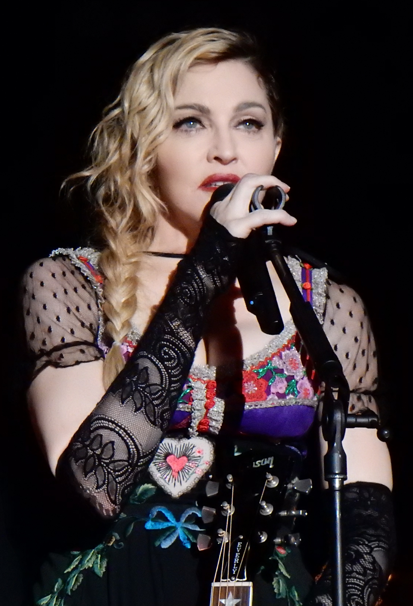

Categoría: Pop
Descubre lo mejor del mundo del Pop en DUOMUSIC.

La música pop, también conocida simplemente como pop, es un género de música popular que tuvo su origen a finales de los años 1950 como una derivación del Pop tradicional, en combinación con otros géneros musicales que estaban de moda en aquel momento. Los términos música pop y música popular se usan a m enudo de manera indistinta, aunque el segundo tiene un sentido más amplio al dar cabida a otros géneros distintos del pop que se consideren populares. Esun género ecléctico, que toma prestados elementos de otros estilos como el urban, el dance, el rock, la música latina, el rhythm and blues o el folk. C on todo, hay elementos esenciales que definen al pop, como son las canciones de corta a media duración, escritas en un formato básico (a menudo la estructura estrofa-estribillo), así como el uso habitual de estribillos repetidos, de temas melódicos y ganchos. La instrumentación se compone habitualmente de guitarra, batería, bajo, guitarra eléctrica, teclado, sintetizador, etc..
Descubre los principales exponentes del Pop
